During Ph.D.
Venture Capital Research
Capital Today, Shanghai
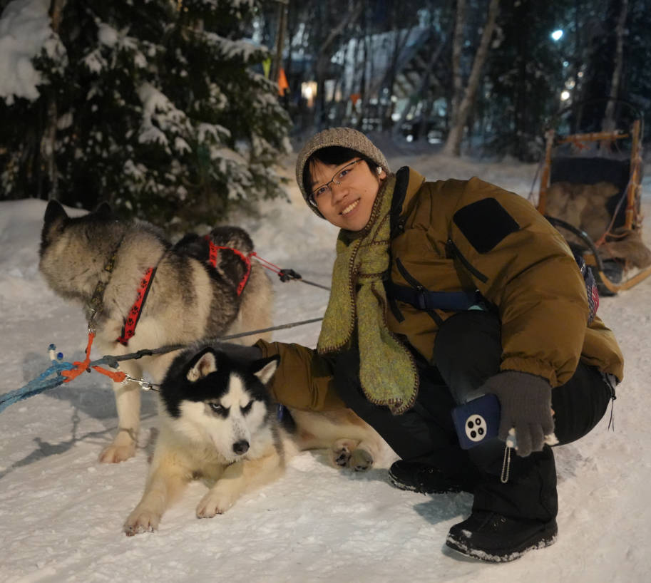
Welcome! I'm Rui JIN, currently a Ph.D. student at the School of Electrical and Electronic Engineering, Nanyang Technological University, supervised by Prof. Lihua XIE.
Previously, I worked as a research assistant at PKU-Agibot Lab, Peking University, supervised by Prof. Hao DONG. I obtained my M.Eng. in Control Science and Engineering at Zhejiang University, where I was co-supervised by Prof. Fei GAO and Prof. Haojian LU. I received my B.Eng. in Mechanical Engineering from Northwestern Polytechnical University. My research interests primarily lie in aerial robotics and autonomous navigation.
jinr0003 [at] e.ntu.edu.sg
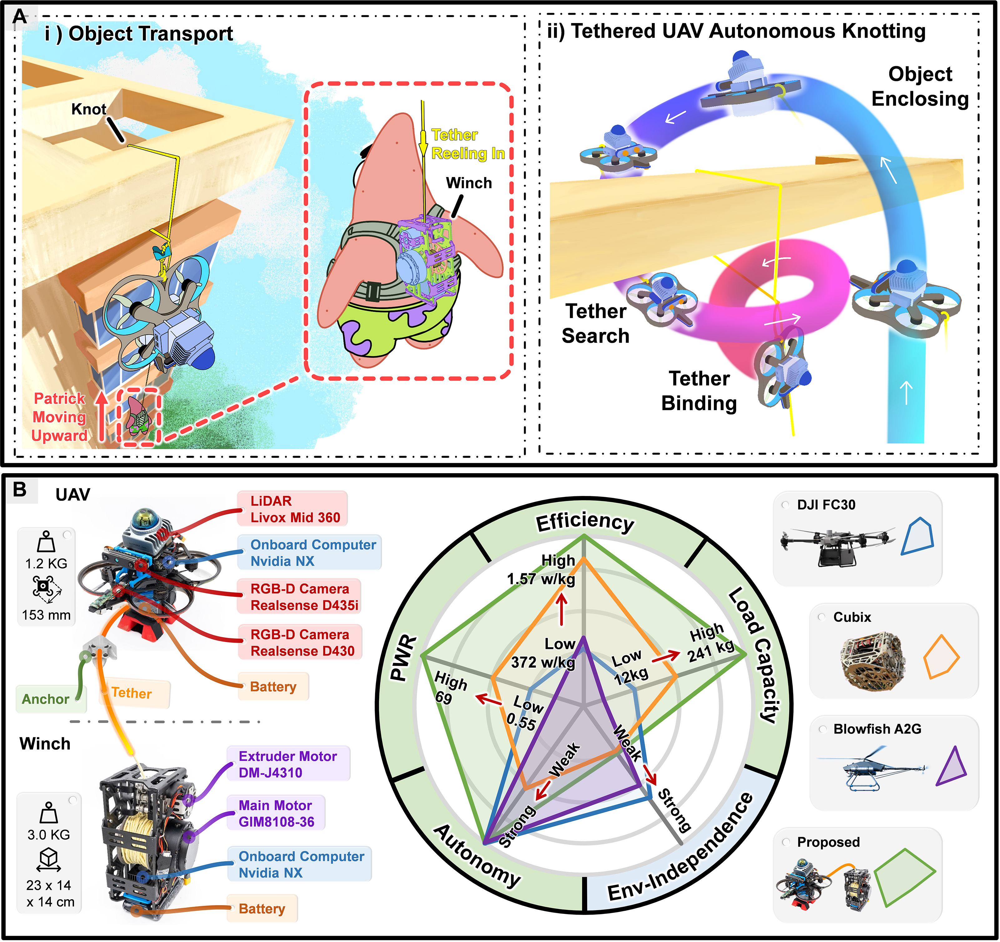
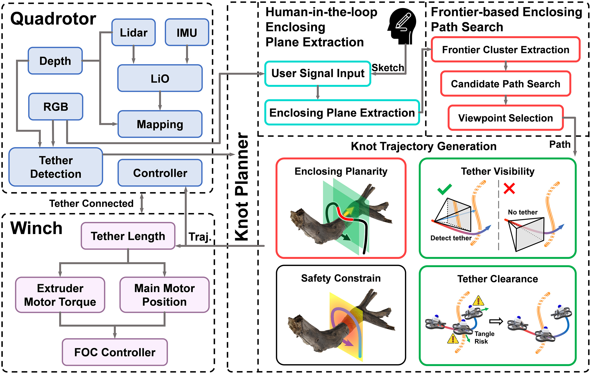
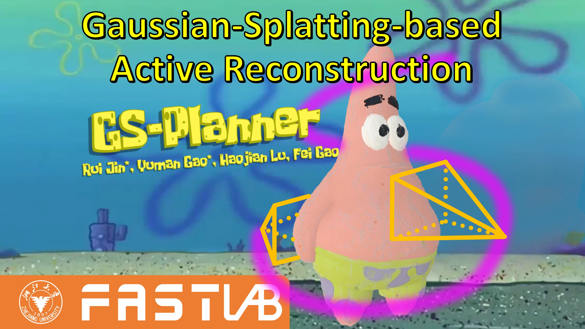

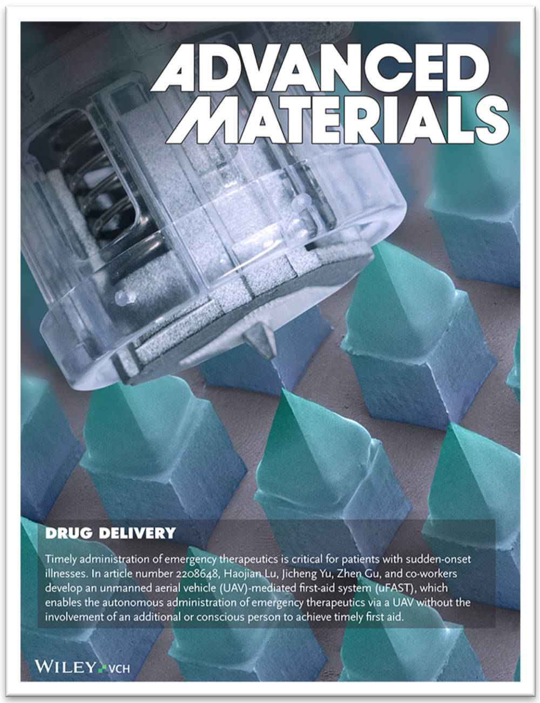
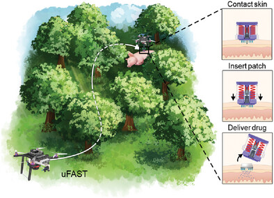

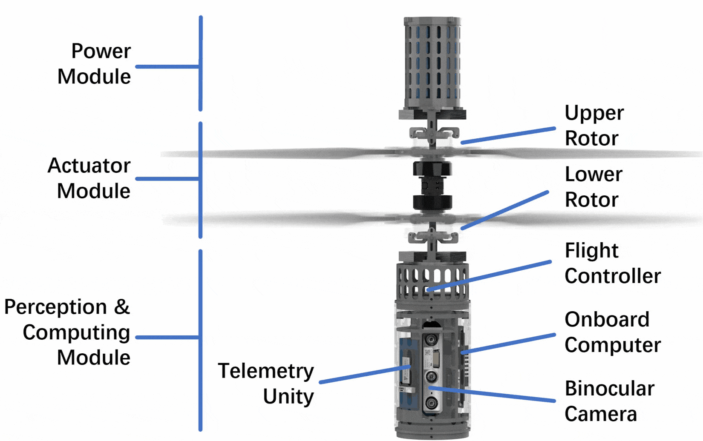
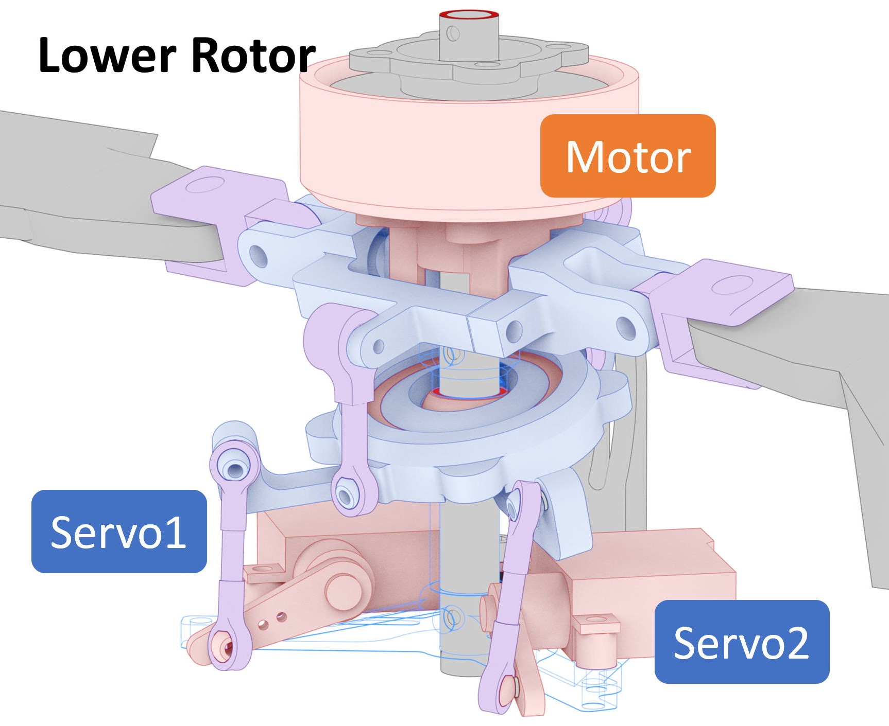


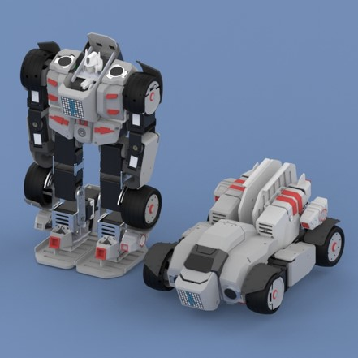
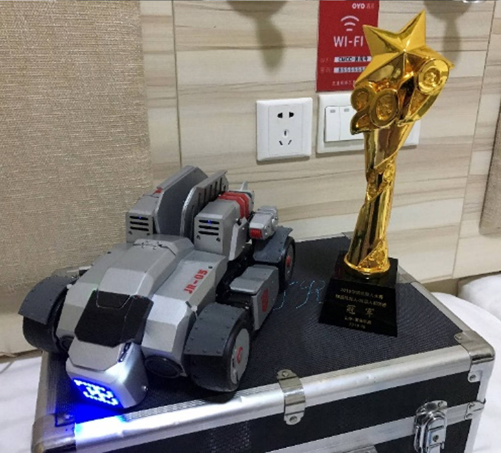
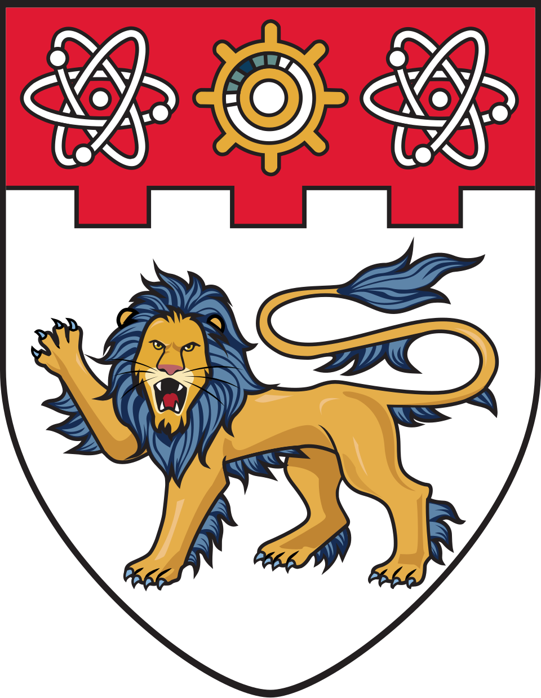